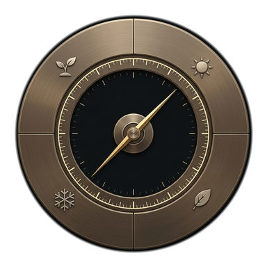
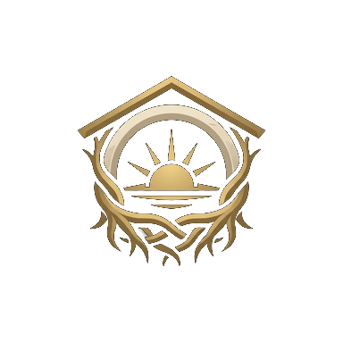

24
Madeira
14
Pedra
18
Alimentos

Tarefas [T]



Construir [B]
● Terreno Válido
Depósito Rústico · 5×4 m
Clique esq. confirmar · Esc voltar

Abrigo Básico
12 Mad · 6 Ped

Depósito Rústico
18 Mad · 10 Ped · 50/50/30
42%
Abrigo · Alden
Anel Externo · Níveis II–III (Proposta)